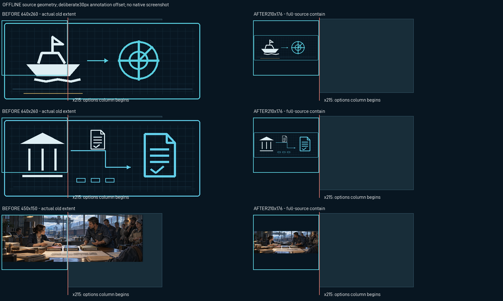
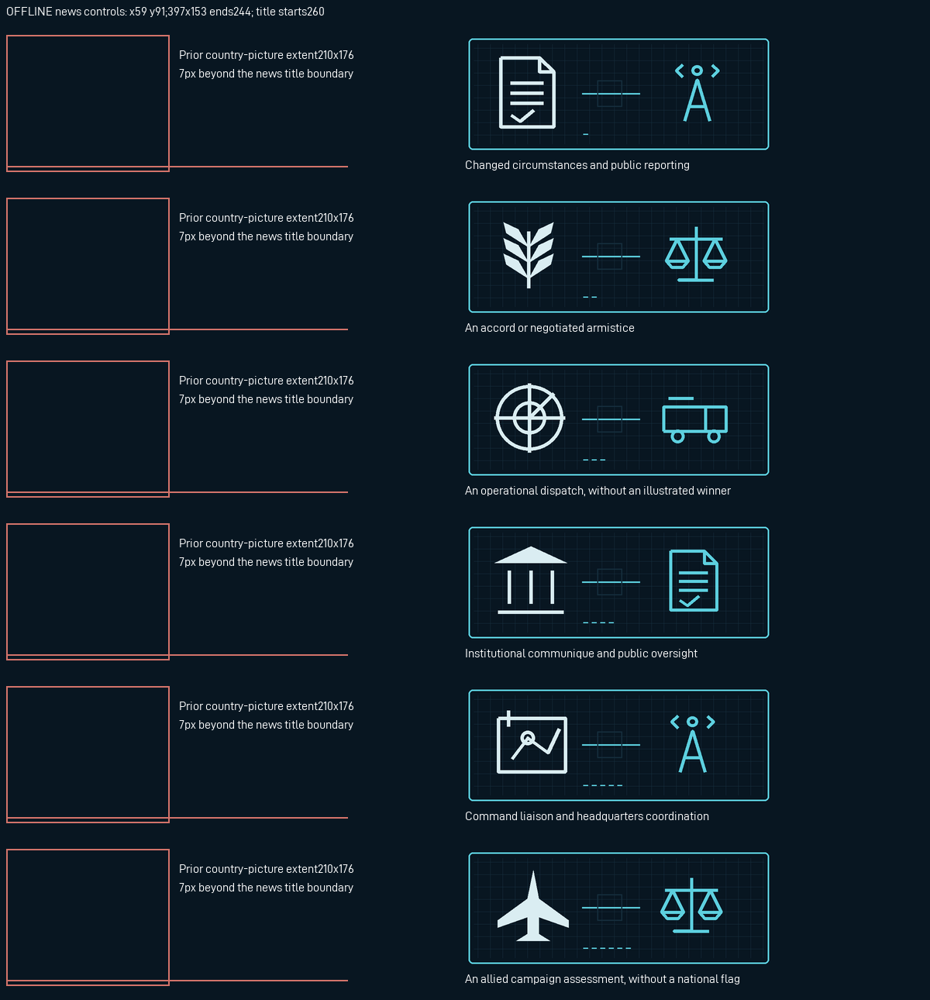

Not a native screenshot. The diagrams use actual source-relative picture/control positions and real old/new image pixels. A30px annotation offset keeps captions outside the product geometry. Country images are bounded by210×176 at5,5 and the options column starts at215. News images are397×153 at59,91, ending at244 before the title at260. No GUI layout changed.
Forty country textures now contain the entire preserved master with opaque navy padding. Three Anea and21 UCW news scenes have separate news-size bindings. UCW news uses six new original code-native subjects, separately mapped to the actual scenes; inherited country photographs remain unchanged. Stories and old country art retain their existing sizes.
425 explicit picture consumers fit in the requested seven files. The32 implicit-picture technical events are hidden and separately listed in consumers.json; this is not an all-mod/native closure claim.


GFX_ac_rc_event_npt_national: [640, 260] →210×176; complete original source tools/reconstruction/source/events/npt_national.pngGFX_ac_rc_event_rec_national: [640, 260] →210×176; complete original source tools/reconstruction/source/events/rec_national.pngGFX_ac_rc_event_sap_national: [640, 260] →210×176; complete original source tools/reconstruction/source/events/sap_national.pngGFX_ac_rc_event_geb_national: [640, 260] →210×176; complete original source tools/reconstruction/source/events/geb_national.pngGFX_ac_rc_event_NPT_rc_mandate: [640, 260] →210×176; complete original source tools/reconstruction/source/events/NPT_rc_mandate.pngGFX_ac_rc_event_NPT_rc_harbours: [640, 260] →210×176; complete original source tools/reconstruction/source/events/NPT_rc_harbours.pngGFX_ac_rc_event_NPT_rc_airspace: [640, 260] →210×176; complete original source tools/reconstruction/source/events/NPT_rc_airspace.pngGFX_ac_rc_event_REC_rc_records: [640, 260] →210×176; complete original source tools/reconstruction/source/events/REC_rc_records.pngGFX_ac_rc_event_REC_rc_works: [640, 260] →210×176; complete original source tools/reconstruction/source/events/REC_rc_works.pngGFX_ac_rc_event_REC_rc_neighbours: [640, 260] →210×176; complete original source tools/reconstruction/source/events/REC_rc_neighbours.pngGFX_ac_rc_event_SAP_rc_mandate: [640, 260] →210×176; complete original source tools/reconstruction/source/events/SAP_rc_mandate.pngGFX_ac_rc_event_SAP_rc_air_service: [640, 260] →210×176; complete original source tools/reconstruction/source/events/SAP_rc_air_service.pngGFX_ac_rc_event_GEB_rc_sovereignty: [640, 260] →210×176; complete original source tools/reconstruction/source/events/GEB_rc_sovereignty.pngGFX_ac_rc_event_GEB_rc_recovery: [640, 260] →210×176; complete original source tools/reconstruction/source/events/GEB_rc_recovery.pngGFX_ac_snp_event_ose_national: [640, 260] →210×176; complete original source tools/superpowers/source/events/ose_national.pngGFX_ac_snp_event_yuk_national: [640, 260] →210×176; complete original source tools/superpowers/source/events/yuk_national.pngGFX_ac_snp_event_OSE_snp_appropriations: [640, 260] →210×176; complete original source tools/superpowers/source/events/OSE_snp_appropriations.pngGFX_ac_snp_event_OSE_snp_productive_capacity: [640, 260] →210×176; complete original source tools/superpowers/source/events/OSE_snp_productive_capacity.pngGFX_ac_snp_event_OSE_snp_continental_transport: [640, 260] →210×176; complete original source tools/superpowers/source/events/OSE_snp_continental_transport.pngGFX_ac_snp_event_OSE_snp_air_watch: [640, 260] →210×176; complete original source tools/superpowers/source/events/OSE_snp_air_watch.pngGFX_ac_snp_event_OSE_snp_guarantor_review: [640, 260] →210×176; complete original source tools/superpowers/source/events/OSE_snp_guarantor_review.pngGFX_ac_snp_event_OSE_snp_civil_space: [640, 260] →210×176; complete original source tools/superpowers/source/events/OSE_snp_civil_space.pngGFX_ac_snp_event_OSE_snp_procurement_scrutiny: [640, 260] →210×176; complete original source tools/superpowers/source/events/OSE_snp_procurement_scrutiny.pngGFX_ac_snp_event_OSE_snp_crisis_authority: [640, 260] →210×176; complete original source tools/superpowers/source/events/OSE_snp_crisis_authority.pngGFX_ac_snp_event_YUK_snp_allocation: [640, 260] →210×176; complete original source tools/superpowers/source/events/YUK_snp_allocation.pngGFX_ac_snp_event_YUK_snp_industrial_orders: [640, 260] →210×176; complete original source tools/superpowers/source/events/YUK_snp_industrial_orders.pngGFX_ac_snp_event_YUK_snp_logistics: [640, 260] →210×176; complete original source tools/superpowers/source/events/YUK_snp_logistics.pngGFX_ac_snp_event_YUK_snp_training: [640, 260] →210×176; complete original source tools/superpowers/source/events/YUK_snp_training.pngGFX_ac_snp_event_YUK_snp_distribution_review: [640, 260] →210×176; complete original source tools/superpowers/source/events/YUK_snp_distribution_review.pngGFX_ac_snp_event_YUK_snp_maritime_support: [640, 260] →210×176; complete original source tools/superpowers/source/events/YUK_snp_maritime_support.pngGFX_ac_snp_event_YUK_snp_technical_cooperation: [640, 260] →210×176; complete original source tools/superpowers/source/events/YUK_snp_technical_cooperation.pngGFX_ac_snp_event_YUK_snp_orders_review: [640, 260] →210×176; complete original source tools/superpowers/source/events/YUK_snp_orders_review.pngGFX_ac_fsb_event_FAT_allocation: [450, 150] →210×176; complete original source source/artwork/fato_south_belka/FAT_allocation.pngGFX_ac_fsb_event_FAT_freight: [450, 150] →210×176; complete original source source/artwork/fato_south_belka/FAT_freight.pngGFX_ac_fsb_event_FAT_consent: [450, 150] →210×176; complete original source source/artwork/fato_south_belka/FAT_consent.pngGFX_ac_fsb_event_FAT_hearing: [450, 150] →210×176; complete original source source/artwork/fato_south_belka/FAT_hearing.pngGFX_ac_fsb_event_SBK_registry: [450, 150] →210×176; complete original source source/artwork/fato_south_belka/SBK_registry.pngGFX_ac_fsb_event_SBK_workshop: [450, 150] →210×176; complete original source source/artwork/fato_south_belka/SBK_workshop.pngGFX_ac_fsb_event_SBK_hearing: [450, 150] →210×176; complete original source source/artwork/fato_south_belka/SBK_hearing.pngGFX_ac_fsb_event_SBK_remit: [450, 150] →210×176; complete original source source/artwork/fato_south_belka/SBK_remit.pngSeparately, the Anea focus review labels use the shipped bitmap atlas and measured cells; all108 delivered focus DDS and all548 protected original files remain exact. Native rendering, input, event layout in game and display-scale acceptance remain untested.